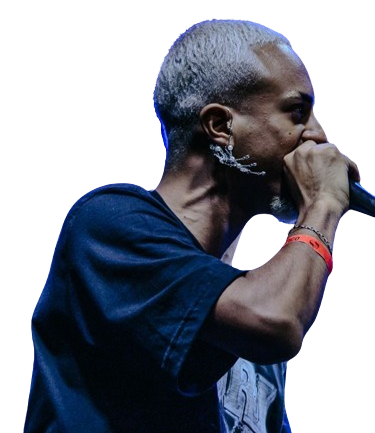

Kauã Barreto ou apenas Barreto, o girassol de itaqua, barreto é um Mc de Batalha de rima do estado de São Paulo, conhecido por um poeta das batalhas, que se destaca pelo seu flow e entrega de sentimento nas suas rimas, e sendo um mc que mais elogia do que ataca o seu adversário, como maior título de sua carreira ele ganhou a Batalha da Norte edição Rangnarok, junto com seus irmãos as tartarugas ninjas de guarulhos Jotape, Dopre, Brennuz e o próprio Barreto, sendo o MVP da Noite.
"tem um pedaço de Barreto por todo São Paulo"
